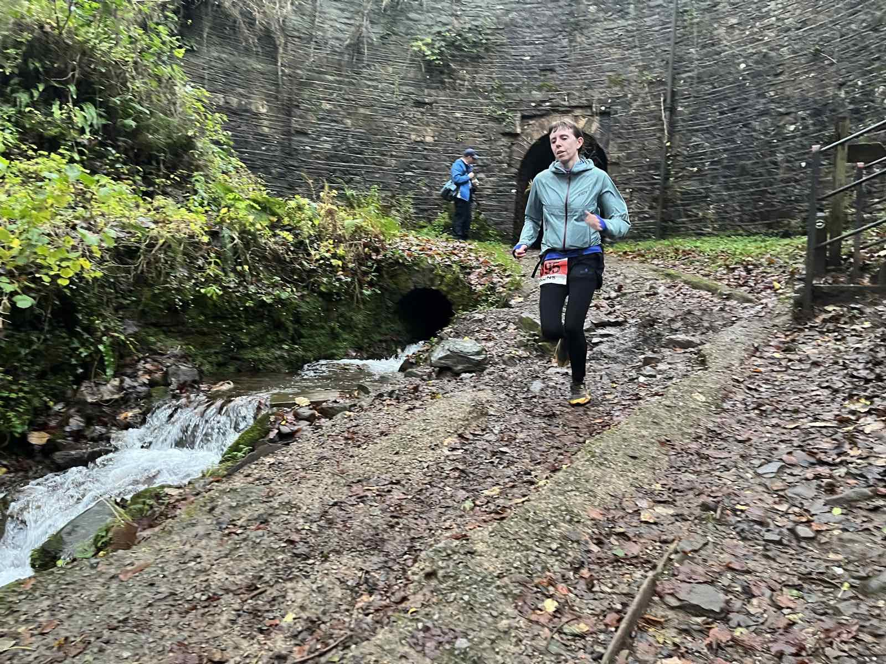

home-hero
- File
images/generated/photos/home-hero.jpg- Dimensions
- 1328 × 888; 1328:888 (1.50:1); 114 KB
- Used on
- index.html
- Role
- hero
- Focal point
- 47% 45%
- Alt text
- A line of fell runners climbing steeply through woodland
- Status
- Active
Internal visual inventory generated from data/photos/manifest.json. This file is excluded from production deployment.
images/generated/photos/home-hero.jpg
images/generated/photos/home-descent.jpg
images/generated/photos/home-community-start.jpg
images/generated/photos/home-community-runner-dog.jpg
images/generated/photos/home-wildfire-response.jpg
images/generated/photos/home-wildfire-smoke.jpg
images/generated/photos/info-finishers.jpg
images/generated/photos/info-winner-bethan.jpg
images/generated/photos/info-third-jonathan.jpg
images/generated/photos/route-ascent.jpg
images/generated/photos/route-start.jpg
images/generated/photos/route-tunnel.jpg
images/generated/photos/route-tramroad.jpg
images/generated/photos/route-steep-climb.jpg
images/generated/photos/route-trig.jpg
images/generated/photos/route-finish.jpg
images/generated/photos/route-muddy-descent.jpg
images/generated/photos/kit-swap-2024.jpg